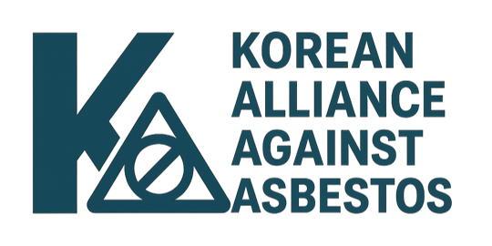

폐석면 관련사업자의 권리를 지켜, 불법을 추방하고 국민건강을 지켜냅시다.
석면추방국민연대와 함께하기
폐석면관련 제보하기
지금 무슨 일이 있나요?

👮🏻
폐석면 방치현장, 사업자(석면해체제거 등록업, 운반업, 중간처분업, 최종처분업)의 권리침해 및 관계기관의 부당요구 관련하여 제보해주세요.
석면추방국민연대가 여러분과 함께 하겠습니다.
석면처리관련 정책과 집행을 감시하며 부족한 제도를 개선하고 꼭 필요한 법과 정책을 제시합니다. 오늘도 바쁘게 움직이는
석면추방국민연대
의 활동을 확인해보세요.
석면관련 불법행위 제보하기
권리침해, 부당요구, 갑질행위 제보하기
제보가 필요한 폐석면 관련 불법 사례
앨범
News&Issue
공지사항
공식일정
자료실
불러오는 중...